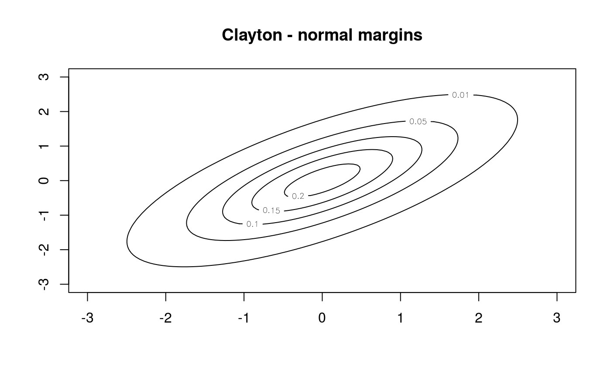
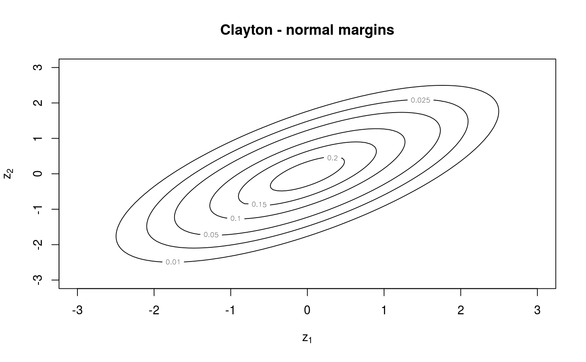
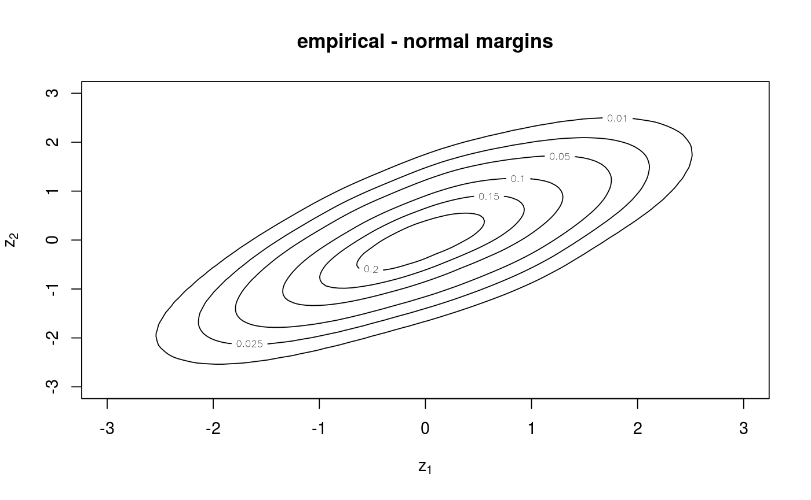

Note: This function is deprecated and only available for backwards
compatibility. See contour.BiCop() for contour plots of
parametric copulas, and BiCopKDE() for kernel estimates.
BiCopMetaContour( u1 = NULL, u2 = NULL, bw = 1, size = 100, levels = c(0.01, 0.05, 0.1, 0.15, 0.2), family = "emp", par = 0, par2 = 0, PLOT = TRUE, margins = "norm", margins.par = 0, xylim = NA, obj = NULL, ... )
| u1, u2 | Data vectors of equal length with values in \([0,1]\) (default:
|
|---|---|
| bw | Bandwidth (smoothing factor; default: |
| size | Number of grid points; default: |
| levels | Vector of contour levels. For Gaussian, Student-t or
exponential margins the default value ( |
| family | An integer defining the bivariate copula family or indicating
an empirical contour plot: |
| par | Copula parameter; if empirical contour plot, |
| par2 | Second copula parameter for t-, BB1, BB6, BB7, BB8, Tawn type 1
and type 2 copulas (default: |
| PLOT | Logical; whether the results are plotted. If |
| margins | Character; margins for the bivariate copula contour plot.
Possible margins are: |
| margins.par | Parameter(s) of the distribution of the margins if
necessary (default: |
| xylim | A 2-dimensional vector of the x- and y-limits. By default
( |
| obj |
|
| ... | Additional plot arguments. |
A vector of length size with the x-values of the
kernel density estimator with Gaussian kernel if the empirical contour plot
is chosen and a sequence of values in xylim if the theoretical
contour plot is chosen.
A vector of length size with the
y-values of the kernel density estimator with Gaussian kernel if the
empirical contour plot is chosen and a sequence of values in xylim if
the theoretical contour plot is chosen.
A matrix of dimension
size with the values of the density of the meta distribution with
chosen margins (see margins and margins.par) evaluated at the
grid points given by x and y.
The combination family = 0 (independence copula) and
margins = "unif" (uniform margins) is not possible because all
z-values are equal.
## meta Clayton distribution with Gaussian margins cop <- BiCop(family = 1, tau = 0.5) BiCopMetaContour(obj = cop, main = "Clayton - normal margins")#> Warning: This function is deprecated. See ?contour.BiCop for contour plots of parametric copulas #> and ?BiCopKDE for kernel estimates.## empirical contour plot with standard normal margins dat <- BiCopSim(1000, cop) BiCopMetaContour(dat[, 1], dat[, 2], bw = 2, family = "emp", main = "empirical - normal margins")#> Warning: This function is deprecated. See ?contour.BiCop for contour plots of parametric copulas #> and ?BiCopKDE for kernel estimates.## empirical contour plot with exponential margins BiCopMetaContour(dat[, 1], dat[, 2], bw = 2, main = "empirical - exponential margins", margins = "exp", margins.par = 1)#> Warning: This function is deprecated. See ?contour.BiCop for contour plots of parametric copulas #> and ?BiCopKDE for kernel estimates.